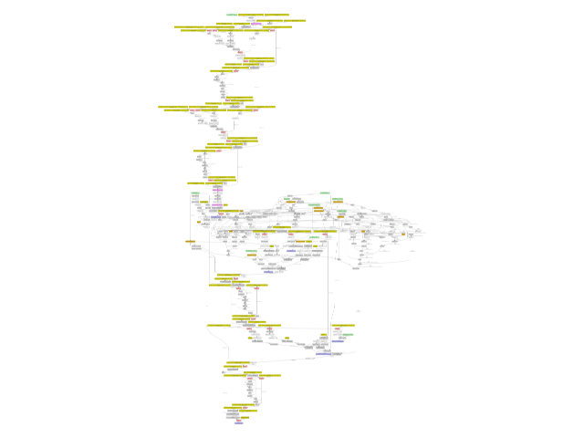
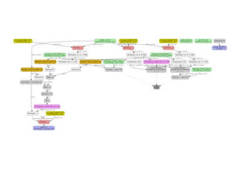
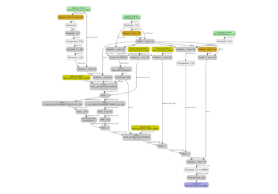

Note
Go to the end to download the full example code.
Export Gemma3 tiny random with InputObserver¶
This reuses the recipe introduced by example Export a LLM with InputObserver (with Tiny-LLM) for model tiny-random/gemma-3.
import pandas
import torch
from onnx_diagnostic import doc
from onnx_diagnostic.helpers import string_type
from onnx_diagnostic.export.api import to_onnx
from onnx_diagnostic.torch_export_patches import (
register_additional_serialization_functions,
torch_export_patches,
)
from onnx_diagnostic.investigate.input_observer import InputObserver
from transformers import pipeline
model_id = "tiny-random/gemma-3"
pipe = pipeline(
"image-text-to-text",
model=model_id,
device="cpu",
trust_remote_code=True,
max_new_tokens=3,
dtype=torch.float16,
)
messages = [
{"role": "system", "content": [{"type": "text", "text": "You are a helpful assistant."}]},
{
"role": "user",
"content": [
{
"type": "image",
"url": "https://huggingface.co/datasets/huggingface/documentation-images/resolve/main/p-blog/candy.JPG",
},
{"type": "text", "text": "What animal is on the candy?"},
],
},
]
Loading weights: 0%| | 0/67 [00:00<?, ?it/s]
Loading weights: 1%|▏ | 1/67 [00:00<00:00, 5127.51it/s, Materializing param=model.language_model.embed_tokens.weight]
Loading weights: 1%|▏ | 1/67 [00:00<00:00, 1742.54it/s, Materializing param=model.language_model.embed_tokens.weight]
Loading weights: 3%|▎ | 2/67 [00:00<00:00, 1460.16it/s, Materializing param=model.language_model.layers.0.input_layernorm.weight]
Loading weights: 3%|▎ | 2/67 [00:00<00:00, 1153.87it/s, Materializing param=model.language_model.layers.0.input_layernorm.weight]
Loading weights: 4%|▍ | 3/67 [00:00<00:00, 1205.72it/s, Materializing param=model.language_model.layers.0.mlp.down_proj.weight]
Loading weights: 4%|▍ | 3/67 [00:00<00:00, 1077.58it/s, Materializing param=model.language_model.layers.0.mlp.down_proj.weight]
Loading weights: 6%|▌ | 4/67 [00:00<00:00, 1171.59it/s, Materializing param=model.language_model.layers.0.mlp.gate_proj.weight]
Loading weights: 6%|▌ | 4/67 [00:00<00:00, 1088.65it/s, Materializing param=model.language_model.layers.0.mlp.gate_proj.weight]
Loading weights: 7%|▋ | 5/67 [00:00<00:00, 1140.93it/s, Materializing param=model.language_model.layers.0.mlp.up_proj.weight]
Loading weights: 7%|▋ | 5/67 [00:00<00:00, 1077.89it/s, Materializing param=model.language_model.layers.0.mlp.up_proj.weight]
Loading weights: 9%|▉ | 6/67 [00:00<00:00, 709.52it/s, Materializing param=model.language_model.layers.0.post_attention_layernorm.weight]
Loading weights: 9%|▉ | 6/67 [00:00<00:00, 671.93it/s, Materializing param=model.language_model.layers.0.post_attention_layernorm.weight]
Loading weights: 10%|█ | 7/67 [00:00<00:00, 720.69it/s, Materializing param=model.language_model.layers.0.post_feedforward_layernorm.weight]
Loading weights: 10%|█ | 7/67 [00:00<00:00, 703.71it/s, Materializing param=model.language_model.layers.0.post_feedforward_layernorm.weight]
Loading weights: 12%|█▏ | 8/67 [00:00<00:00, 767.12it/s, Materializing param=model.language_model.layers.0.pre_feedforward_layernorm.weight]
Loading weights: 12%|█▏ | 8/67 [00:00<00:00, 756.79it/s, Materializing param=model.language_model.layers.0.pre_feedforward_layernorm.weight]
Loading weights: 13%|█▎ | 9/67 [00:00<00:00, 829.00it/s, Materializing param=model.language_model.layers.0.self_attn.k_norm.weight]
Loading weights: 13%|█▎ | 9/67 [00:00<00:00, 819.40it/s, Materializing param=model.language_model.layers.0.self_attn.k_norm.weight]
Loading weights: 15%|█▍ | 10/67 [00:00<00:00, 888.77it/s, Materializing param=model.language_model.layers.0.self_attn.k_proj.weight]
Loading weights: 15%|█▍ | 10/67 [00:00<00:00, 878.94it/s, Materializing param=model.language_model.layers.0.self_attn.k_proj.weight]
Loading weights: 16%|█▋ | 11/67 [00:00<00:00, 944.90it/s, Materializing param=model.language_model.layers.0.self_attn.o_proj.weight]
Loading weights: 16%|█▋ | 11/67 [00:00<00:00, 934.31it/s, Materializing param=model.language_model.layers.0.self_attn.o_proj.weight]
Loading weights: 18%|█▊ | 12/67 [00:00<00:00, 953.02it/s, Materializing param=model.language_model.layers.0.self_attn.q_norm.weight]
Loading weights: 18%|█▊ | 12/67 [00:00<00:00, 936.42it/s, Materializing param=model.language_model.layers.0.self_attn.q_norm.weight]
Loading weights: 19%|█▉ | 13/67 [00:00<00:00, 903.56it/s, Materializing param=model.language_model.layers.0.self_attn.q_proj.weight]
Loading weights: 19%|█▉ | 13/67 [00:00<00:00, 891.60it/s, Materializing param=model.language_model.layers.0.self_attn.q_proj.weight]
Loading weights: 21%|██ | 14/67 [00:00<00:00, 940.91it/s, Materializing param=model.language_model.layers.0.self_attn.v_proj.weight]
Loading weights: 21%|██ | 14/67 [00:00<00:00, 931.83it/s, Materializing param=model.language_model.layers.0.self_attn.v_proj.weight]
Loading weights: 22%|██▏ | 15/67 [00:00<00:00, 688.63it/s, Materializing param=model.language_model.layers.1.input_layernorm.weight]
Loading weights: 22%|██▏ | 15/67 [00:00<00:00, 682.39it/s, Materializing param=model.language_model.layers.1.input_layernorm.weight]
Loading weights: 24%|██▍ | 16/67 [00:00<00:00, 717.82it/s, Materializing param=model.language_model.layers.1.mlp.down_proj.weight]
Loading weights: 24%|██▍ | 16/67 [00:00<00:00, 713.28it/s, Materializing param=model.language_model.layers.1.mlp.down_proj.weight]
Loading weights: 25%|██▌ | 17/67 [00:00<00:00, 748.16it/s, Materializing param=model.language_model.layers.1.mlp.gate_proj.weight]
Loading weights: 25%|██▌ | 17/67 [00:00<00:00, 743.93it/s, Materializing param=model.language_model.layers.1.mlp.gate_proj.weight]
Loading weights: 27%|██▋ | 18/67 [00:00<00:00, 778.62it/s, Materializing param=model.language_model.layers.1.mlp.up_proj.weight]
Loading weights: 27%|██▋ | 18/67 [00:00<00:00, 774.35it/s, Materializing param=model.language_model.layers.1.mlp.up_proj.weight]
Loading weights: 28%|██▊ | 19/67 [00:00<00:00, 806.55it/s, Materializing param=model.language_model.layers.1.post_attention_layernorm.weight]
Loading weights: 28%|██▊ | 19/67 [00:00<00:00, 803.17it/s, Materializing param=model.language_model.layers.1.post_attention_layernorm.weight]
Loading weights: 30%|██▉ | 20/67 [00:00<00:00, 838.37it/s, Materializing param=model.language_model.layers.1.post_feedforward_layernorm.weight]
Loading weights: 30%|██▉ | 20/67 [00:00<00:00, 835.02it/s, Materializing param=model.language_model.layers.1.post_feedforward_layernorm.weight]
Loading weights: 31%|███▏ | 21/67 [00:00<00:00, 869.19it/s, Materializing param=model.language_model.layers.1.pre_feedforward_layernorm.weight]
Loading weights: 31%|███▏ | 21/67 [00:00<00:00, 865.65it/s, Materializing param=model.language_model.layers.1.pre_feedforward_layernorm.weight]
Loading weights: 33%|███▎ | 22/67 [00:00<00:00, 899.47it/s, Materializing param=model.language_model.layers.1.self_attn.k_norm.weight]
Loading weights: 33%|███▎ | 22/67 [00:00<00:00, 896.04it/s, Materializing param=model.language_model.layers.1.self_attn.k_norm.weight]
Loading weights: 34%|███▍ | 23/67 [00:00<00:00, 929.41it/s, Materializing param=model.language_model.layers.1.self_attn.k_proj.weight]
Loading weights: 34%|███▍ | 23/67 [00:00<00:00, 925.97it/s, Materializing param=model.language_model.layers.1.self_attn.k_proj.weight]
Loading weights: 36%|███▌ | 24/67 [00:00<00:00, 958.78it/s, Materializing param=model.language_model.layers.1.self_attn.o_proj.weight]
Loading weights: 36%|███▌ | 24/67 [00:00<00:00, 955.22it/s, Materializing param=model.language_model.layers.1.self_attn.o_proj.weight]
Loading weights: 37%|███▋ | 25/67 [00:00<00:00, 987.97it/s, Materializing param=model.language_model.layers.1.self_attn.q_norm.weight]
Loading weights: 37%|███▋ | 25/67 [00:00<00:00, 983.76it/s, Materializing param=model.language_model.layers.1.self_attn.q_norm.weight]
Loading weights: 39%|███▉ | 26/67 [00:00<00:00, 969.01it/s, Materializing param=model.language_model.layers.1.self_attn.q_proj.weight]
Loading weights: 39%|███▉ | 26/67 [00:00<00:00, 963.76it/s, Materializing param=model.language_model.layers.1.self_attn.q_proj.weight]
Loading weights: 40%|████ | 27/67 [00:00<00:00, 905.64it/s, Materializing param=model.language_model.layers.1.self_attn.v_proj.weight]
Loading weights: 40%|████ | 27/67 [00:00<00:00, 901.40it/s, Materializing param=model.language_model.layers.1.self_attn.v_proj.weight]
Loading weights: 42%|████▏ | 28/67 [00:00<00:00, 928.42it/s, Materializing param=model.language_model.norm.weight]
Loading weights: 42%|████▏ | 28/67 [00:00<00:00, 925.67it/s, Materializing param=model.language_model.norm.weight]
Loading weights: 43%|████▎ | 29/67 [00:00<00:00, 953.55it/s, Materializing param=model.multi_modal_projector.mm_input_projection_weight]
Loading weights: 43%|████▎ | 29/67 [00:00<00:00, 951.10it/s, Materializing param=model.multi_modal_projector.mm_input_projection_weight]
Loading weights: 45%|████▍ | 30/67 [00:00<00:00, 978.86it/s, Materializing param=model.multi_modal_projector.mm_soft_emb_norm.weight]
Loading weights: 45%|████▍ | 30/67 [00:00<00:00, 976.48it/s, Materializing param=model.multi_modal_projector.mm_soft_emb_norm.weight]
Loading weights: 46%|████▋ | 31/67 [00:00<00:00, 1004.07it/s, Materializing param=model.vision_tower.vision_model.embeddings.patch_embedding.bias]
Loading weights: 46%|████▋ | 31/67 [00:00<00:00, 1001.54it/s, Materializing param=model.vision_tower.vision_model.embeddings.patch_embedding.bias]
Loading weights: 48%|████▊ | 32/67 [00:00<00:00, 1028.37it/s, Materializing param=model.vision_tower.vision_model.embeddings.patch_embedding.weight]
Loading weights: 48%|████▊ | 32/67 [00:00<00:00, 1025.93it/s, Materializing param=model.vision_tower.vision_model.embeddings.patch_embedding.weight]
Loading weights: 49%|████▉ | 33/67 [00:00<00:00, 1033.15it/s, Materializing param=model.vision_tower.vision_model.embeddings.position_embedding.weight]
Loading weights: 49%|████▉ | 33/67 [00:00<00:00, 1029.56it/s, Materializing param=model.vision_tower.vision_model.embeddings.position_embedding.weight]
Loading weights: 51%|█████ | 34/67 [00:00<00:00, 810.35it/s, Materializing param=model.vision_tower.vision_model.encoder.layers.0.layer_norm1.bias]
Loading weights: 51%|█████ | 34/67 [00:00<00:00, 800.29it/s, Materializing param=model.vision_tower.vision_model.encoder.layers.0.layer_norm1.bias]
Loading weights: 52%|█████▏ | 35/67 [00:00<00:00, 804.96it/s, Materializing param=model.vision_tower.vision_model.encoder.layers.0.layer_norm1.weight]
Loading weights: 52%|█████▏ | 35/67 [00:00<00:00, 799.11it/s, Materializing param=model.vision_tower.vision_model.encoder.layers.0.layer_norm1.weight]
Loading weights: 54%|█████▎ | 36/67 [00:00<00:00, 806.32it/s, Materializing param=model.vision_tower.vision_model.encoder.layers.0.layer_norm2.bias]
Loading weights: 54%|█████▎ | 36/67 [00:00<00:00, 801.01it/s, Materializing param=model.vision_tower.vision_model.encoder.layers.0.layer_norm2.bias]
Loading weights: 55%|█████▌ | 37/67 [00:00<00:00, 810.26it/s, Materializing param=model.vision_tower.vision_model.encoder.layers.0.layer_norm2.weight]
Loading weights: 55%|█████▌ | 37/67 [00:00<00:00, 805.79it/s, Materializing param=model.vision_tower.vision_model.encoder.layers.0.layer_norm2.weight]
Loading weights: 57%|█████▋ | 38/67 [00:00<00:00, 818.34it/s, Materializing param=model.vision_tower.vision_model.encoder.layers.0.mlp.fc1.bias]
Loading weights: 57%|█████▋ | 38/67 [00:00<00:00, 814.94it/s, Materializing param=model.vision_tower.vision_model.encoder.layers.0.mlp.fc1.bias]
Loading weights: 58%|█████▊ | 39/67 [00:00<00:00, 828.74it/s, Materializing param=model.vision_tower.vision_model.encoder.layers.0.mlp.fc1.weight]
Loading weights: 58%|█████▊ | 39/67 [00:00<00:00, 825.44it/s, Materializing param=model.vision_tower.vision_model.encoder.layers.0.mlp.fc1.weight]
Loading weights: 60%|█████▉ | 40/67 [00:00<00:00, 830.52it/s, Materializing param=model.vision_tower.vision_model.encoder.layers.0.mlp.fc2.bias]
Loading weights: 60%|█████▉ | 40/67 [00:00<00:00, 824.19it/s, Materializing param=model.vision_tower.vision_model.encoder.layers.0.mlp.fc2.bias]
Loading weights: 61%|██████ | 41/67 [00:00<00:00, 827.98it/s, Materializing param=model.vision_tower.vision_model.encoder.layers.0.mlp.fc2.weight]
Loading weights: 61%|██████ | 41/67 [00:00<00:00, 822.88it/s, Materializing param=model.vision_tower.vision_model.encoder.layers.0.mlp.fc2.weight]
Loading weights: 63%|██████▎ | 42/67 [00:00<00:00, 824.64it/s, Materializing param=model.vision_tower.vision_model.encoder.layers.0.self_attn.k_proj.bias]
Loading weights: 63%|██████▎ | 42/67 [00:00<00:00, 818.57it/s, Materializing param=model.vision_tower.vision_model.encoder.layers.0.self_attn.k_proj.bias]
Loading weights: 64%|██████▍ | 43/67 [00:00<00:00, 706.58it/s, Materializing param=model.vision_tower.vision_model.encoder.layers.0.self_attn.k_proj.weight]
Loading weights: 64%|██████▍ | 43/67 [00:00<00:00, 701.36it/s, Materializing param=model.vision_tower.vision_model.encoder.layers.0.self_attn.k_proj.weight]
Loading weights: 66%|██████▌ | 44/67 [00:00<00:00, 707.66it/s, Materializing param=model.vision_tower.vision_model.encoder.layers.0.self_attn.out_proj.bias]
Loading weights: 66%|██████▌ | 44/67 [00:00<00:00, 704.10it/s, Materializing param=model.vision_tower.vision_model.encoder.layers.0.self_attn.out_proj.bias]
Loading weights: 67%|██████▋ | 45/67 [00:00<00:00, 710.06it/s, Materializing param=model.vision_tower.vision_model.encoder.layers.0.self_attn.out_proj.weight]
Loading weights: 67%|██████▋ | 45/67 [00:00<00:00, 706.78it/s, Materializing param=model.vision_tower.vision_model.encoder.layers.0.self_attn.out_proj.weight]
Loading weights: 69%|██████▊ | 46/67 [00:00<00:00, 715.07it/s, Materializing param=model.vision_tower.vision_model.encoder.layers.0.self_attn.q_proj.bias]
Loading weights: 69%|██████▊ | 46/67 [00:00<00:00, 711.83it/s, Materializing param=model.vision_tower.vision_model.encoder.layers.0.self_attn.q_proj.bias]
Loading weights: 70%|███████ | 47/67 [00:00<00:00, 720.16it/s, Materializing param=model.vision_tower.vision_model.encoder.layers.0.self_attn.q_proj.weight]
Loading weights: 70%|███████ | 47/67 [00:00<00:00, 715.19it/s, Materializing param=model.vision_tower.vision_model.encoder.layers.0.self_attn.q_proj.weight]
Loading weights: 72%|███████▏ | 48/67 [00:00<00:00, 723.57it/s, Materializing param=model.vision_tower.vision_model.encoder.layers.0.self_attn.v_proj.bias]
Loading weights: 72%|███████▏ | 48/67 [00:00<00:00, 720.01it/s, Materializing param=model.vision_tower.vision_model.encoder.layers.0.self_attn.v_proj.bias]
Loading weights: 73%|███████▎ | 49/67 [00:00<00:00, 653.47it/s, Materializing param=model.vision_tower.vision_model.encoder.layers.0.self_attn.v_proj.weight]
Loading weights: 73%|███████▎ | 49/67 [00:00<00:00, 650.64it/s, Materializing param=model.vision_tower.vision_model.encoder.layers.0.self_attn.v_proj.weight]
Loading weights: 75%|███████▍ | 50/67 [00:00<00:00, 654.09it/s, Materializing param=model.vision_tower.vision_model.encoder.layers.1.layer_norm1.bias]
Loading weights: 75%|███████▍ | 50/67 [00:00<00:00, 650.42it/s, Materializing param=model.vision_tower.vision_model.encoder.layers.1.layer_norm1.bias]
Loading weights: 76%|███████▌ | 51/67 [00:00<00:00, 608.29it/s, Materializing param=model.vision_tower.vision_model.encoder.layers.1.layer_norm1.weight]
Loading weights: 76%|███████▌ | 51/67 [00:00<00:00, 605.26it/s, Materializing param=model.vision_tower.vision_model.encoder.layers.1.layer_norm1.weight]
Loading weights: 78%|███████▊ | 52/67 [00:00<00:00, 608.76it/s, Materializing param=model.vision_tower.vision_model.encoder.layers.1.layer_norm2.bias]
Loading weights: 78%|███████▊ | 52/67 [00:00<00:00, 607.20it/s, Materializing param=model.vision_tower.vision_model.encoder.layers.1.layer_norm2.bias]
Loading weights: 79%|███████▉ | 53/67 [00:00<00:00, 616.84it/s, Materializing param=model.vision_tower.vision_model.encoder.layers.1.layer_norm2.weight]
Loading weights: 79%|███████▉ | 53/67 [00:00<00:00, 616.08it/s, Materializing param=model.vision_tower.vision_model.encoder.layers.1.layer_norm2.weight]
Loading weights: 81%|████████ | 54/67 [00:00<00:00, 618.70it/s, Materializing param=model.vision_tower.vision_model.encoder.layers.1.mlp.fc1.bias]
Loading weights: 81%|████████ | 54/67 [00:00<00:00, 617.14it/s, Materializing param=model.vision_tower.vision_model.encoder.layers.1.mlp.fc1.bias]
Loading weights: 82%|████████▏ | 55/67 [00:00<00:00, 626.22it/s, Materializing param=model.vision_tower.vision_model.encoder.layers.1.mlp.fc1.weight]
Loading weights: 82%|████████▏ | 55/67 [00:00<00:00, 625.25it/s, Materializing param=model.vision_tower.vision_model.encoder.layers.1.mlp.fc1.weight]
Loading weights: 84%|████████▎ | 56/67 [00:00<00:00, 611.77it/s, Materializing param=model.vision_tower.vision_model.encoder.layers.1.mlp.fc2.bias]
Loading weights: 84%|████████▎ | 56/67 [00:00<00:00, 609.13it/s, Materializing param=model.vision_tower.vision_model.encoder.layers.1.mlp.fc2.bias]
Loading weights: 85%|████████▌ | 57/67 [00:00<00:00, 605.70it/s, Materializing param=model.vision_tower.vision_model.encoder.layers.1.mlp.fc2.weight]
Loading weights: 85%|████████▌ | 57/67 [00:00<00:00, 604.85it/s, Materializing param=model.vision_tower.vision_model.encoder.layers.1.mlp.fc2.weight]
Loading weights: 87%|████████▋ | 58/67 [00:00<00:00, 614.13it/s, Materializing param=model.vision_tower.vision_model.encoder.layers.1.self_attn.k_proj.bias]
Loading weights: 87%|████████▋ | 58/67 [00:00<00:00, 613.57it/s, Materializing param=model.vision_tower.vision_model.encoder.layers.1.self_attn.k_proj.bias]
Loading weights: 88%|████████▊ | 59/67 [00:00<00:00, 617.32it/s, Materializing param=model.vision_tower.vision_model.encoder.layers.1.self_attn.k_proj.weight]
Loading weights: 88%|████████▊ | 59/67 [00:00<00:00, 616.45it/s, Materializing param=model.vision_tower.vision_model.encoder.layers.1.self_attn.k_proj.weight]
Loading weights: 90%|████████▉ | 60/67 [00:00<00:00, 625.52it/s, Materializing param=model.vision_tower.vision_model.encoder.layers.1.self_attn.out_proj.bias]
Loading weights: 90%|████████▉ | 60/67 [00:00<00:00, 624.90it/s, Materializing param=model.vision_tower.vision_model.encoder.layers.1.self_attn.out_proj.bias]
Loading weights: 91%|█████████ | 61/67 [00:00<00:00, 611.93it/s, Materializing param=model.vision_tower.vision_model.encoder.layers.1.self_attn.out_proj.weight]
Loading weights: 91%|█████████ | 61/67 [00:00<00:00, 609.69it/s, Materializing param=model.vision_tower.vision_model.encoder.layers.1.self_attn.out_proj.weight]
Loading weights: 93%|█████████▎| 62/67 [00:00<00:00, 617.30it/s, Materializing param=model.vision_tower.vision_model.encoder.layers.1.self_attn.out_proj.weight]
Loading weights: 93%|█████████▎| 62/67 [00:00<00:00, 617.30it/s, Materializing param=model.vision_tower.vision_model.encoder.layers.1.self_attn.q_proj.bias]
Loading weights: 93%|█████████▎| 62/67 [00:00<00:00, 617.30it/s, Materializing param=model.vision_tower.vision_model.encoder.layers.1.self_attn.q_proj.bias]
Loading weights: 94%|█████████▍| 63/67 [00:00<00:00, 617.30it/s, Materializing param=model.vision_tower.vision_model.encoder.layers.1.self_attn.q_proj.weight]
Loading weights: 94%|█████████▍| 63/67 [00:00<00:00, 617.30it/s, Materializing param=model.vision_tower.vision_model.encoder.layers.1.self_attn.q_proj.weight]
Loading weights: 96%|█████████▌| 64/67 [00:00<00:00, 617.30it/s, Materializing param=model.vision_tower.vision_model.encoder.layers.1.self_attn.v_proj.bias]
Loading weights: 96%|█████████▌| 64/67 [00:00<00:00, 617.30it/s, Materializing param=model.vision_tower.vision_model.encoder.layers.1.self_attn.v_proj.bias]
Loading weights: 97%|█████████▋| 65/67 [00:00<00:00, 617.30it/s, Materializing param=model.vision_tower.vision_model.encoder.layers.1.self_attn.v_proj.weight]
Loading weights: 97%|█████████▋| 65/67 [00:00<00:00, 617.30it/s, Materializing param=model.vision_tower.vision_model.encoder.layers.1.self_attn.v_proj.weight]
Loading weights: 99%|█████████▊| 66/67 [00:00<00:00, 617.30it/s, Materializing param=model.vision_tower.vision_model.post_layernorm.bias]
Loading weights: 99%|█████████▊| 66/67 [00:00<00:00, 617.30it/s, Materializing param=model.vision_tower.vision_model.post_layernorm.bias]
Loading weights: 100%|██████████| 67/67 [00:00<00:00, 617.30it/s, Materializing param=model.vision_tower.vision_model.post_layernorm.weight]
Loading weights: 100%|██████████| 67/67 [00:00<00:00, 617.30it/s, Materializing param=model.vision_tower.vision_model.post_layernorm.weight]
Loading weights: 100%|██████████| 67/67 [00:00<00:00, 645.78it/s, Materializing param=model.vision_tower.vision_model.post_layernorm.weight]
The model to observe.
print("model type:", type(pipe.model))
model type: <class 'transformers.models.gemma3.modeling_gemma3.Gemma3ForConditionalGeneration'>
Captures inputs and outputs for the model.
observer = InputObserver(
value_if_missing=dict(pixel_values=torch.empty((0, 3, 896, 896), dtype=torch.float16))
)
with (
register_additional_serialization_functions(patch_transformers=True),
observer(pipe.model),
):
pipe(text=messages, max_new_tokens=4)
print(f"{observer.num_obs()} observations stored for encoder.")
3 observations stored for encoder.
Exports the model.
kwargs = observer.infer_arguments()
dynamic_shapes = observer.infer_dynamic_shapes(set_batch_dimension_for=True)
print(f"encoder kwargs={string_type(kwargs, with_shape=True)}")
print(f"encoder dynamic_shapes={dynamic_shapes}")
for candidate in observer.info.inputs:
print(
" ",
candidate,
candidate.str_obs(),
string_type(candidate.aligned_flat_list, with_shape=True),
)
filename = "plot_export_gemma3_tiny_input_observer.onnx"
with torch_export_patches(patch_transformers=True, patch_torch=True, stop_if_static=2):
to_onnx(
pipe.model,
args=(),
filename=filename,
kwargs=kwargs,
dynamic_shapes=dynamic_shapes,
exporter="custom",
)
encoder kwargs=dict(input_ids:T7s1x282,pixel_values:T10s1x3x896x896,attention_mask:T7s1x282,position_ids:T7s1x282,past_key_values:DynamicCache(DynamicSlidingWindowLayer(T10s1x1x0x32, T10s1x1x0x32), DynamicLayer(T10s1x1x0x32, T10s1x1x0x32)),token_type_ids:T7s1x282,cache_position:T7s282,logits_to_keep:int)
encoder dynamic_shapes={'input_ids': {0: DimHint(DYNAMIC), 1: DimHint(DYNAMIC)}, 'pixel_values': {0: DimHint(DYNAMIC)}, 'attention_mask': {0: DimHint(DYNAMIC), 1: DimHint(DYNAMIC)}, 'position_ids': {0: DimHint(DYNAMIC), 1: DimHint(DYNAMIC)}, 'past_key_values': [{0: DimHint(DYNAMIC), 2: DimHint(DYNAMIC)}, {0: DimHint(DYNAMIC), 2: DimHint(DYNAMIC)}, {0: DimHint(DYNAMIC), 2: DimHint(DYNAMIC)}, {0: DimHint(DYNAMIC), 2: DimHint(DYNAMIC)}], 'token_type_ids': {0: DimHint(DYNAMIC), 1: DimHint(DYNAMIC)}, 'cache_position': {0: DimHint(DYNAMIC)}, 'logits_to_keep': None}
InputCandidate(0 args, 7 kwargs, 6 tensors, 10 aligned tensors) InputCandidate(args=(), kwargs=dict(input_ids:T7s1x282,pixel_values:T10s1x3x896x896,attention_mask:T7s1x282,position_ids:T7s1x282,past_key_values:DynamicCache(key_cache=#0[], value_cache=#0[]),token_type_ids:T7s1x282,cache_position:T7s282), cst_kwargs={'logits_to_keep': 1}) #10[T7s1x282,T10s1x3x896x896,T7s1x282,T7s1x282,None,None,None,None,T7s1x282,T7s282]
InputCandidate(0 args, 7 kwargs, 10 tensors, 10 aligned tensors) InputCandidate(args=(), kwargs=dict(input_ids:T7s1x1,pixel_values:T10s0x3x896x896,attention_mask:T7s1x283,position_ids:T7s1x1,past_key_values:DynamicCache(DynamicSlidingWindowLayer(T10s1x1x282x32, T10s1x1x282x32), DynamicLayer(T10s1x1x282x32, T10s1x1x282x32)),token_type_ids:T7s1x1,cache_position:T7s1), cst_kwargs={'logits_to_keep': 1}) #10[T7s1x1,T10s0x3x896x896,T7s1x283,T7s1x1,T10s1x1x282x32,T10s1x1x282x32,T10s1x1x282x32,T10s1x1x282x32,T7s1x1,T7s1]
InputCandidate(0 args, 7 kwargs, 10 tensors, 10 aligned tensors) InputCandidate(args=(), kwargs=dict(input_ids:T7s1x1,pixel_values:T10s0x3x896x896,attention_mask:T7s1x284,position_ids:T7s1x1,past_key_values:DynamicCache(DynamicSlidingWindowLayer(T10s1x1x283x32, T10s1x1x283x32), DynamicLayer(T10s1x1x283x32, T10s1x1x283x32)),token_type_ids:T7s1x1,cache_position:T7s1), cst_kwargs={'logits_to_keep': 1}) #10[T7s1x1,T10s0x3x896x896,T7s1x284,T7s1x1,T10s1x1x283x32,T10s1x1x283x32,T10s1x1x283x32,T10s1x1x283x32,T7s1x1,T7s1]
Let’s measure the discrepancies.
data = observer.check_discrepancies(filename, progress_bar=True, atol=1e-2, include_io=True)
df = pandas.DataFrame(data)
df.to_excel("plot_export_gemma3_tiny_input_observer.xlsx")
print(df)
0%| | 0/3 [00:00<?, ?it/s]
33%|███▎ | 1/3 [00:02<00:04, 2.26s/it]
100%|██████████| 3/3 [00:02<00:00, 1.29it/s]
abs rel sum ... inputs outputs_torch outputs_ort
0 6.140625 2683.465333 281211.849279 ... dict(input_ids:T7s1x282,pixel_values:T10s1x3x8... #6[T10s1x1x262208,T10s1x1x282x32,T10s1x1x282x3... #6[T10s1x1x262208,T10s1x1x282x32,T10s1x1x282x3...
1 6.123047 2544.354432 291449.685828 ... dict(input_ids:T7s1x1,pixel_values:T10s0x3x896... #5[T10s1x1x262208,T10s1x1x283x32,T10s1x1x283x3... #5[T10s1x1x262208,T10s1x1x283x32,T10s1x1x283x3...
2 6.115234 2715.016147 291133.223759 ... dict(input_ids:T7s1x1,pixel_values:T10s0x3x896... #5[T10s1x1x262208,T10s1x1x284x32,T10s1x1x284x3... #5[T10s1x1x262208,T10s1x1x284x32,T10s1x1x284x3...
[3 rows x 18 columns]
Let’s show the errors.
Total running time of the script: (0 minutes 58.849 seconds)
Related examples


Export attention from arnir0/Tiny-LLM with InputObserver
Export attention from arnir0/Tiny-LLM with InputObserver

Export OptiMind-SFT with InputObserver
Export OptiMind-SFT with InputObserver